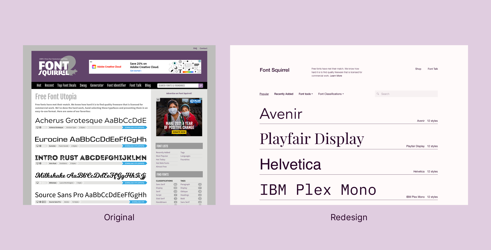

Font Squirrel Redesign
Concept website redesign for Font Squirrel, a type foundry for free, high-quality, commercial-use fonts for web and other media uses.
About the project
Font Squirrel is a type foundry that provides free, high-quality fonts for web and other media purposes. I personally use the site when in search for new fonts to use in projects when my other options have been exhausted. Font Squirrel provides a excellent services but I personally think it fails to represent that visually through their website.
Duration
Jan 2021
Role
Web design
The new site
Below are some of the redesign pages of the Font Squirrel website. I wanted to take a editorial design approach when designing this website, a style I always wanted to experiment with.
FontSquirrel Home Page
Typeface Information Page
FontSquirrel About Page
FontSquirrel Contact Page
Font Identifier Page
Font Generator Page
Before & After
Home Page